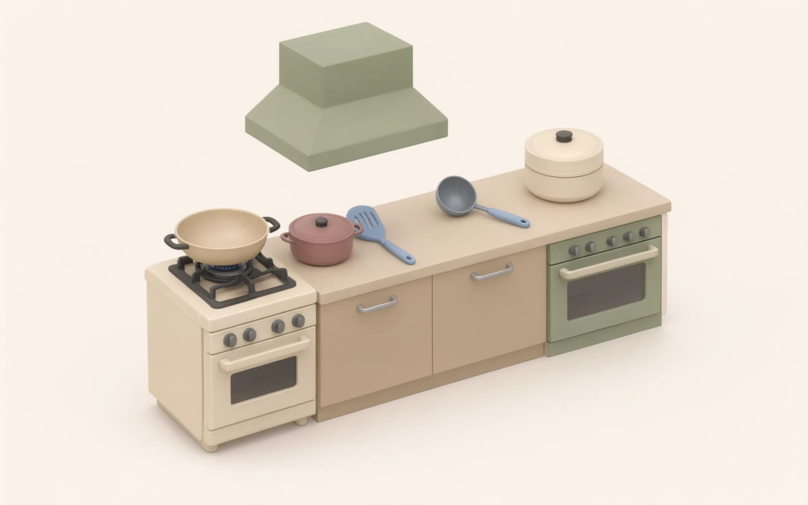

厨房
家居
服装
食物
身体部位
美妆与护肤
出行
Cooktop
灶台区
场景
卡片
女声
男声

指到或点一下物品
再听一次
gas stove
range hood
wok
pot
spatula
ladle
steamer
oven
gas stove
燃气灶
range hood
抽油烟机
wok
炒锅
pot
汤锅
spatula
锅铲
ladle
汤勺
steamer
蒸笼
oven
烤箱
‹ Sink 水槽区
厨房
Prep 备餐台面 ›